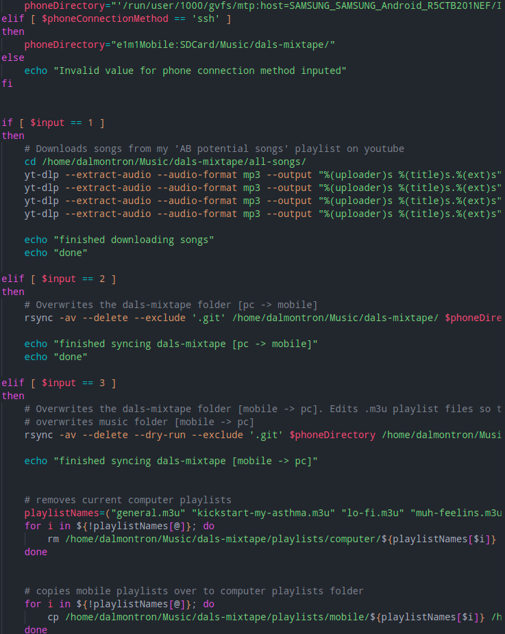

Daljeet Singh's Website
Welcome to my Website! Here you'll find more about me and what I do.
Siege-O-Namics is a WIP project related to the operators in the video game Tom Clancy's: Rainbow Six Siege. Each operator has a page dedicated to them, a page that contains advanced tips. The goal of the project is not to teach people how the operators work, it already assumes the user has this knowledge. It instead indexes information regarding the complications of that operators place in the game.
This is a bash script I created to automate how I maintain my music I listen to. I listen to music from local files in an mp3 player app on my phone, and explore music on youtube. This script can download my music from youtube, sync my music and playlist files across devices, and rename directories within those playlists to match with their respective device. This allows for an intuitive way to listen to music the old way.
Freedom is a parody of The OutKast's Hey Ya! It was a school project in highschool for two of my friends. They didn't have much experience in editing, which is why I helped out. I sang the chorus, and edited the video with audacity and davinci resolve.